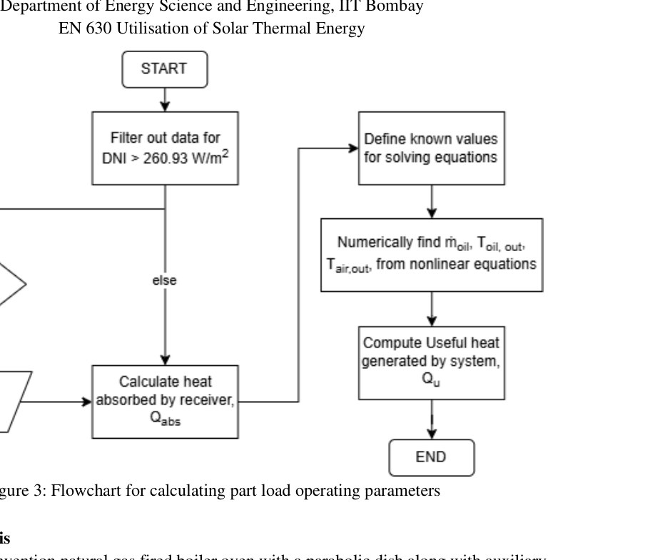
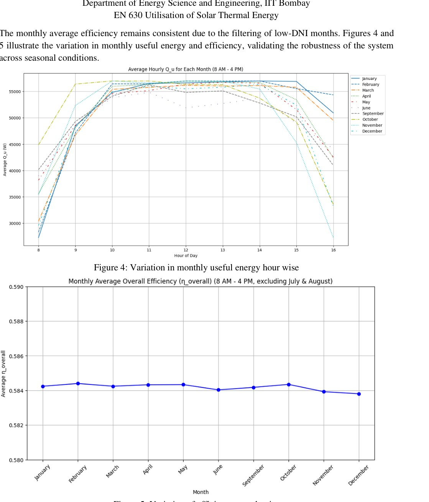

Overview
The study integrates a parabolic-dish collector with a thermal-oil loop and heat exchanger to supply hot air for automobile paint curing, while retaining an auxiliary conventional heater for reliability during low-solar periods.
Solar resource & part-load model
Hourly DNI for Jodhpur was used to size and simulate the system. The part-load logic varies HTF flow at lower irradiance and limits receiver input when irradiance exceeds the design condition.

Annual performance & economics
Under the report assumptions, the model estimates fuel savings above 78% and an annual CO₂ reduction of roughly 31.3 tonnes. The reported simple payback is long—about 20.9 years—showing that technical decarbonization potential does not automatically translate to strong project economics.

Model boundaries
The submitted report contains different annual operating assumptions in different sections and two HTF mass-flow values. This page therefore emphasizes the consolidated design outputs and labels economic/environmental results as model estimates.
Source material
The project narrative above is condensed from the submitted coursework/thesis and keeps design estimates, simulation results and demonstrated hardware distinct.